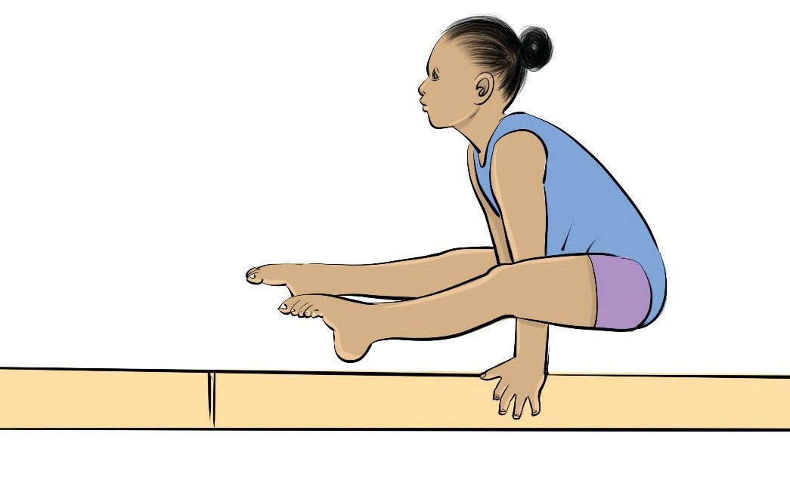

Figure 4.40: Split hold
Activity 4.34
Search from internet and other sources on how to execute different types of holding, and practice it repeatedly until you master the skill.
Exercise 4.10
Springs
Springs refer to the movements that involve explosive power and rapid extension of the body to propel the gymnast into the air. These can be performed using hands or feet, and the skill is essential for other skills and transitions. The common springs include handspring on vault, and back handspring.
Handspring on vault
A handspring on vault is a movement whereby a gymnast sprints down the runway, jumps onto the springboard, places the hands on the vault table, and pushes off into the air before landing. It is a basic vault that builds power, speed, and body control for more advanced vaults. The following steps will help you practice handspring on the vault: